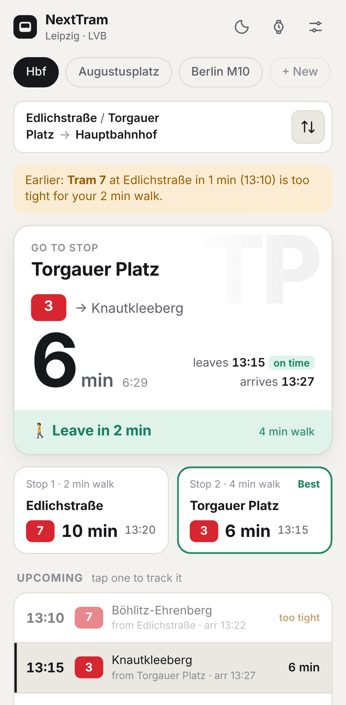
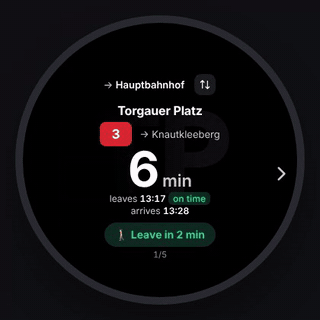
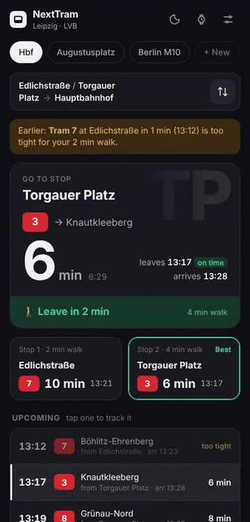

Live for Leipzig · LVB and Berlin · BVG
When is the next tram?
Ask your assistant. It knows your stop, your direction and how long you take to walk there. A timer starts, and you know when to leave the house.
“Hey Google, when is the tram?”
The problem
Six steps to learn one number.
The official apps in Germany are built to plan any journey across the whole network. When you only want your tram from your stop, you still go through all of it.
- 1Open the appUnlock, find the icon.
- 2Wait for it to loadSplash screen, maybe a banner.
- 3Pick your stopAgain. Every time.
- 4Find your directionScroll past lines you never take.
- 5Do the delay mathPlanned 13:12, +3. So 13:15?
- 6Guess your walkIs that enough time to get there?
The answer
The bridge between your tram and your assistant.
Transport apps don’t connect to anything else. Your assistant can’t open them, read them or ask them a question. Next Tram makes that connection: it fetches the live departure data in real time and strips it down to the part that matters to you.
“When is the next tram?”
“Tram 3 towards Knautkleeberg leaves in 6 minutes, at 13:15. Leave in 2 minutes.”
Sample answer, written the way Next Tram phrases it.
Direction first
You know the way. You need the minute.
You already know how to connect to where you’re going. Next Tram only shows trams heading your direction, and tells you which stop to walk to and when to walk out the door.
- Go to stop. The stop that gets you there first.
- Leave in 2 min. A countdown to your front door, not to the platform.
- Trip back. One tap flips the route to bring you home.
- Tap to track. Lock the countdown onto one tram until it leaves.

Two stops
Served by two stops? Program both.
Many homes sit between two stops with different lines. Set a Stop 1 and a Stop 2, each with its own walking time. Next Tram checks both at the same time and sends you to the one that gets you there first.
Sample departures from the app’s default Leipzig route.
Real time
Late tram? No math.
When a tram runs late, the official app shows you the timetable and a delay, and you work out the rest. Next Tram reads the real-time data and does it for you. The minutes you see already include the delay.
13:12 +3
13:12 plus 3 is 13:15. It’s 13:09 now, so 6 minutes. My walk is 4, so I leave in… 2?
Leave in 2 min
delay already counted
Your pace
You set the walking time.
The big operators guess how fast you walk. You know better. Set your own minutes to each stop, tailored to your speed, and Next Tram plans around them. A tram that leaves before you could reach it is skipped and marked too tight.
Try it. Tram 3 leaves in 6 min, the next one in 14 min.
🚶 Leave in 2 min
You’ll reach the stop with time to spare.
Your routes stay on your device. Next Tram asks the public transit data directly and keeps nothing about you anywhere else.
On your wrist
Already on Android smartwatches.
On Wear OS, Next Tram switches to a round, glanceable layout. Step through the next trams with the arrow buttons, tap the countdown to refresh, tap the route to switch favourites.
An Android app (APK). Next Tram installs today as a web app on Android phones and watches. A native APK is on the way.

On your phone
Glance, tap, go.
The phone app opens on your route with the countdown already running. Tap a departure to follow it. Tap ⇅ for the trip back, which checks both home stops so you take whichever gets you home first.

Just ask.
Next tram.
Free, no sign-up. Works in Leipzig and Berlin today.